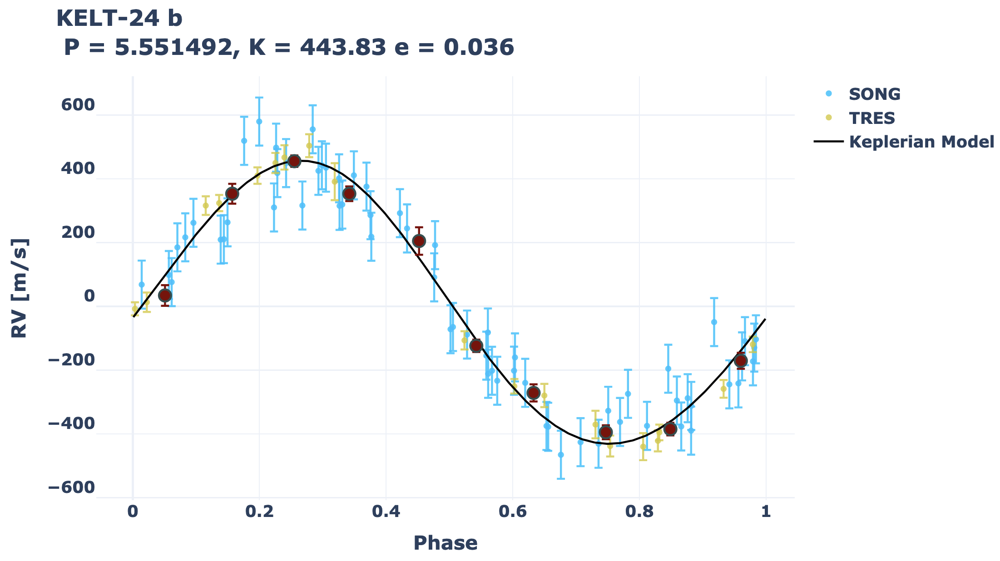
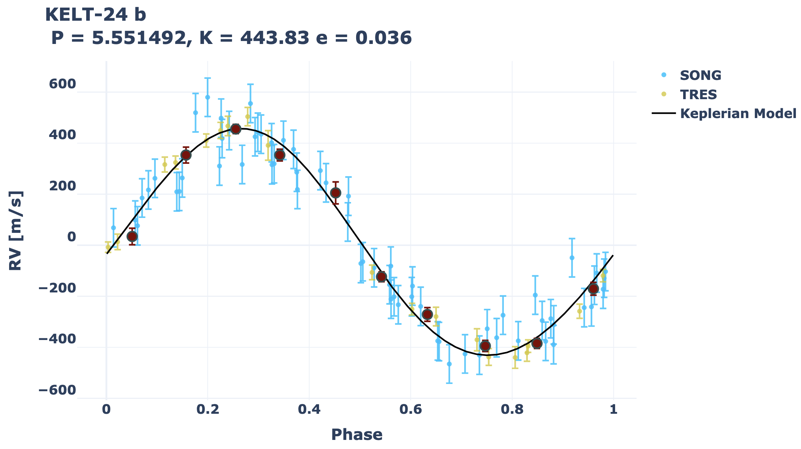

Tutorials
Contents
Tutorials¶
Reduction¶
Below is an example which reduces and extracts an echellogram of Vega observed with the iSHELL spectrograph in Kgas mode (~2.3 microns).
# Base python
import os
# pychell deps
from pychell.reduce.recipes import ReduceRecipe
from pychell.reduce.optimal import OptimalExtractor
from pychell.reduce.trace import PeakTracer
# Basic info
spectrograph = "iSHELL"
data_input_path = os.getcwd() + os.sep + "Vega" + os.sep
output_path = os.getcwd() + os.sep + "ReduceOutputs" + os.sep
# Order tracing
tracer = PeakTracer(n_orders=25, poly_order=2, order_heights=28, order_spacing=30, xleft=500, xright=2048-210, n_slices=10)
# Extractor
extractor = OptimalExtractor(trace_pos_poly_order=4, oversample=16, extract_orders=[1, 2, 5, 10, 15, 20], badpix_threshold=4, remove_background=True, chunk_width=2048, chunk_overlap=0.5, n_iterations=50, trace_pos_refine_window=13, background_smooth_poly_order=None, background_smooth_width=None, min_profile_flux=0.01)
# Create the recipe
recipe = ReduceRecipe(spectrograph="iSHELL", data_input_path=data_input_path, output_path=output_path,
do_bias=False, do_dark=False, do_flat=True, flat_percentile=0.75,
xrange=[199, 1847],
poly_mask_bottom=[[200, 172], [1000, 262], [1800, 290]],
poly_mask_top=[[200, 1834], [1000, 1916], [1800, 1932]],
tracer=tracer,
extractor=extractor,
n_cores=1)
# Init the data
recipe.init_data()
# Reduce the night
recipe.reduce()
To run the example, open a terminal window and run python vega_ishell_reduction_example.py.
An output directory will be created in an output folder Vega. Each sub folder contains the following:
calib - Any master dark, bias, and flat calibration images.
spectra - Reduced and extracted 1-dimensional spectra stored in .fits files. shape=(n_orders, n_traces, n_pixels, 3). The last index is for flux, flux unc, and bad pixels (1=good, 0=bad). The flux and unc are in units of photoelectrons. Plots for each echellogram are also generated.
trace - Order map information stored in a pickle file.
Computing Radial Velocities¶
Below is an example which fits 8 spectra (4 nights) of Barnard’s Star spectra observed with iSHELL. Only orders 6, 8, 12, and 15 are fit. The wavelength solution and LSF are constrained from the isotopic methane gas cell.
First, download and extract the templates from here: https://drive.google.com/file/d/1ubwYyH6DidtDfxRdg707-8M9iORS-jql/view?usp=sharing. Then in the example gj699_ishell_rvs_example.py, change the templates_path variable to the appropriate folder.
# Base Python
import os
import copy
# Numpy
import numpy as np
# Pychell deps
from pychell.spectralmodeling.problems import IterativeSpectralRVProb
import pychell.spectralmodeling.models as pcsm
from pychell.spectralmodeling.objectives import WeightedSpectralUncRMS
from pychell.spectralmodeling.templateaugmenters import WeightedMean
import pychell.data.ishell as ishell
# Optimize deps
from optimize import IterativeNelderMead
# Define basic info
spectrograph = "iSHELL"
data_input_path = os.getcwd() + os.sep + "data" + os.sep
filelist = "filelist_example.txt"
output_path = os.getcwd() + os.sep
star_name = "GJ_699"
tag = "gj699_example"
do_orders = [6, 8, 12, 15] # Do some arbitrary orders (relative to the image)
templates_path = "/Users/cale/Research/pychell_templates/" # Must download templates
# Loop over orders
for order_num in do_orders:
# Wavelength Solution
wls = pcsm.SplineWls(n_splines=6)
# Continuum
continuum = pcsm.SplineContinuum(n_splines=10)
# LSF
lsf = pcsm.HermiteLSF(hermdeg=2, width=ishell.lsf_width)
# Star
star = pcsm.AugmentedStar(input_file=templates_path + "gj699_btsettl_kband.txt", star_name=star_name)
# Gas cell
gas_cell = pcsm.DynamicGasCell(input_file=templates_path + ishell.gas_cell_file, depth=ishell.gas_cell_depth)
# Tellurics
tellurics = pcsm.TelluricsTAPAS(input_path=templates_path, location_tag="maunakea")
# Final spectral model
spectral_model = pcsm.IterativeSpectralForwardModel(wls=wls, continuum=continuum, lsf=lsf,
star=star,
gas_cell=gas_cell,
tellurics=tellurics,
order_num=order_num,
n_iterations=5,
model_resolution=1)
# Create the "Problem" object.
specrvprob = IterativeSpectralRVProb(spectrograph=spectrograph,
spectral_model=spectral_model,
data_input_path=data_input_path, filelist=filelist, output_path=output_path,
tag=tag,
augmenter=WeightedMean(),
obj=WeightedSpectralUncRMS(),
optimizer=IterativeNelderMead(),
n_cores=8,
verbose=True)
# Run RVs for this order
specrvprob.compute_rvs_for_target()
To then run the example, open a terminal window and run python gj699_ishell_rvs_example.py.
Summaries of fits are printed after each fit if verbose=True. An output directory will also be created in an output folder ishell_gj699_example, with each order contained in its own subfolder. Each order then contains the following subfolders:
ForwardModels - The spectral model fit for each observation and iteration as png plots.
RVs - Plots of the individual and per-night (co-added) RVs for each iteration, plots of CCF skew vs. RVs for each iteration, and the RVs stored in a
.npzfile.Templates - Stores stellar templates in .npz files.
A pickle file of the SpectralRVProb object is also saved which may be used to generate wavelength solutions, look at best fit parameters, etc.
Radial Velocity Fitting¶
Below is an example which fits RVs of KELT-24 which hosts a transiting hot Jupiter. Here we fit RVs from TRES and SONG.
# Base Python
import os
# Maths
import numpy as np
# pychell deps
import pychell.data.rvdata as pcrvdata
import pychell.orbits as pco
# Optimize deps
import optimize as opt
# Path name
path = os.path.dirname(os.path.abspath(__file__)) + os.sep
fname = 'kelt24_rvs.txt'
star_name = 'KELT-24'
mstar = 1.460
mstar_unc = [0.059, 0.055]
jitter_dict = {'SONG': 30, 'TRES': 0}
# All data in one dictionary
data = pcrvdata.CompositeRVData.from_radvel_file(fname, wavelengths=None)
# Init parameters and planets dictionary
pars = pco.BayesianParameters()
planets_dict = {}
# Planet 1
planets_dict[1] = {"label": "b", "basis": pco.bases.TCOrbitBasis(1)}
per1 = 5.5514926
per1_unc = 0.0000081
tc1 = 2457147.0529
tc1_unc = 0.002
ecc1 = 0.077
ecc1_unc = 0.024 * 2
w1 = 55 * np.pi / 180
w1_unc = 15 * np.pi / 180
# Note that here the RVs will not help to constrain the period or tc because they are better constrained by the transits, but here we float them for demonstration.
pars["per1"] = pco.BayesianParameter(value=per1, vary=True)
pars["per1"].add_prior(pco.priors.Gaussian(per1, per1_unc))
pars["tc1"] = pco.BayesianParameter(value=tc1, vary=True)
pars["tc1"].add_prior(pco.priors.Gaussian(tc1, tc1_unc))
pars["ecc1"] = pco.BayesianParameter(value=ecc1, vary=True)
pars["ecc1"].add_prior(pco.priors.Uniform(1E-10, 1))
pars["ecc1"].add_prior(pco.priors.Gaussian(ecc1, ecc1_unc))
pars["w1"] = pco.BayesianParameter(value=w1, vary=True)
pars["w1"].add_prior(pco.priors.Gaussian(w1, w1_unc))
pars["k1"] = pco.BayesianParameter(value=462, vary=True)
pars["k1"].add_prior(pco.priors.Positive())
# Gamma offsets, don't include gamma dot or ddot yet
for instname in data:
# np.pi/100 incase median is zero
pars["gamma_" + instname] = pco.BayesianParameter(value=np.nanmedian(data[instname].rv) + np.pi/100, vary=True)
pars["gamma_" + instname].add_prior(pco.priors.Gaussian(pars["gamma_" + instname].value, 100))
# jitter
for instname in data:
pname = f"jitter_{instname}"
pars[pname] = pco.BayesianParameter(value=jitter_dict[instname], vary=jitter_dict[instname] > 0)
if pars[pname].vary:
pars[pname].add_prior(pco.priors.JeffreysSG(1E-10, 100))
# noise, model, and like
likes = {}
noise_process = opt.WhiteNoiseProcess()
model = pco.RVModel(planets_dict=planets_dict, data=data, trend_poly_order=0)
likes["rvs"] = pco.RVLikelihood(model=model, noise_process=noise_process)
# Posterior
post = opt.Posterior(likes=likes)
# Exoplanet problem
rvprob = pco.RVProblem(p0=pars, output_path=path, star_name=star_name, post=post, tag="EXAMPLE")
# Map fit
map_result = rvprob.run_mapfit(opt.IterativeNelderMead(maximize=True))
pbest = map_result["pbest"]
rvprob.plot_full_rvs(pbest)
rvprob.plot_phased_rvs_all(pbest)
print(pbest)
mcmc_result = rvprob.run_mcmc(opt.emceeSampler(), p0=pbest, n_burn_steps=1000, n_taus_thresh=50, n_min_steps=5000)
rvprob.corner_plot(mcmc_result)
To then run the example, open a terminal window and run python kelt24.py. This will perform a maximum a posteriori fit to the RVs followed by MCMC sampling to determine the posterior distributions.
 
